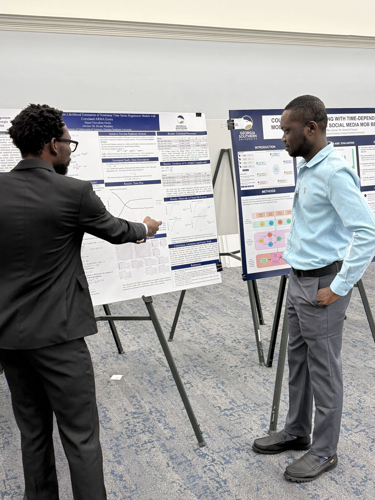
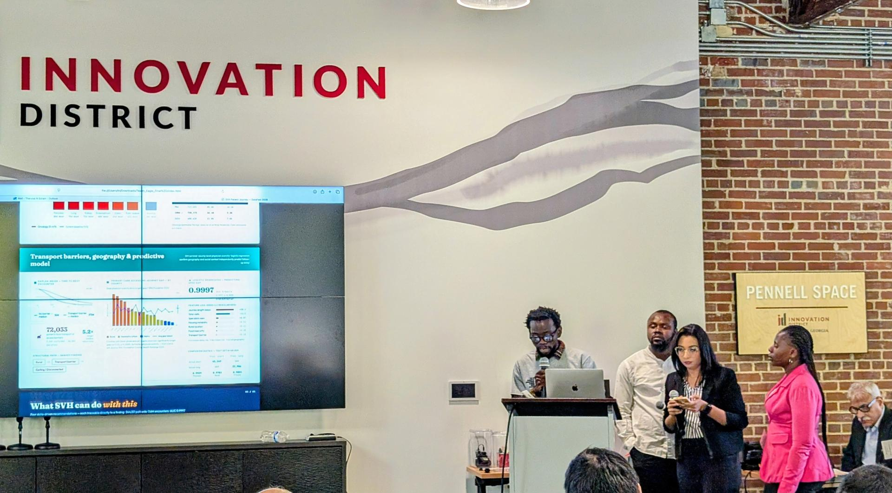
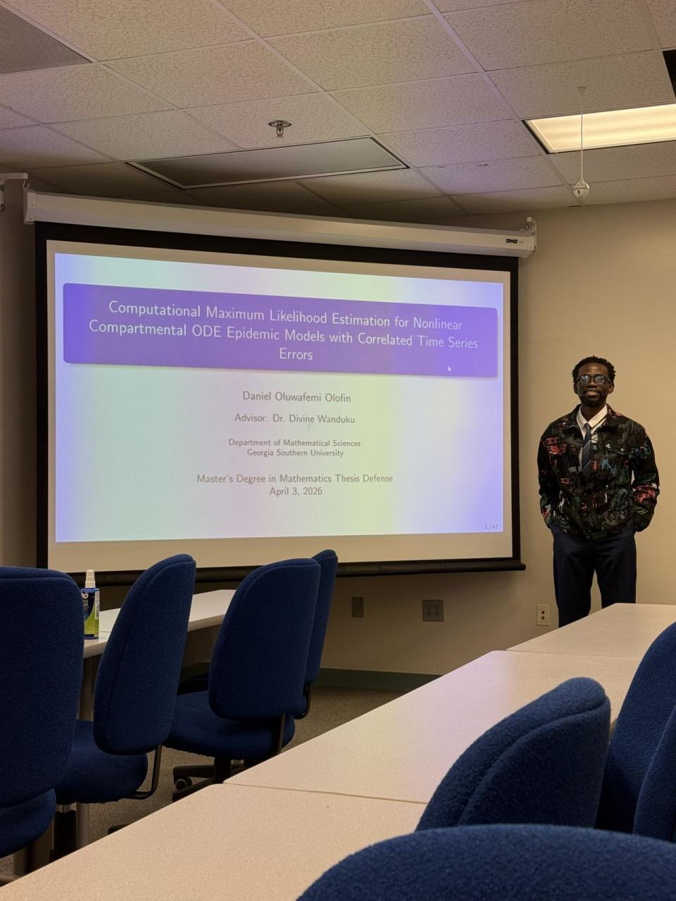
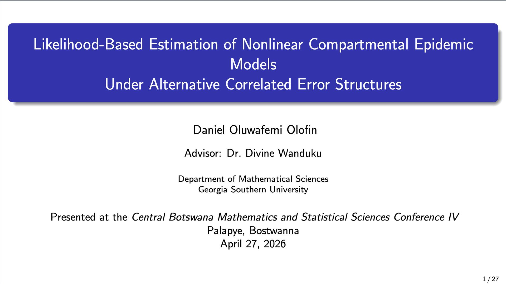
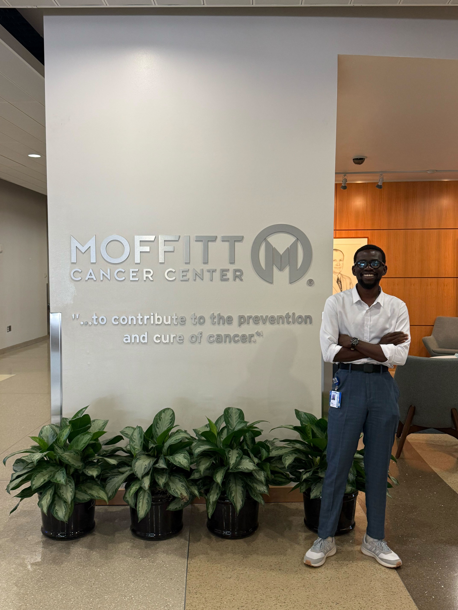
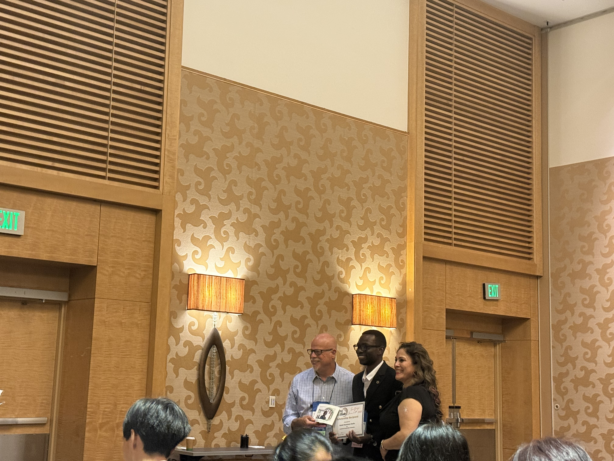
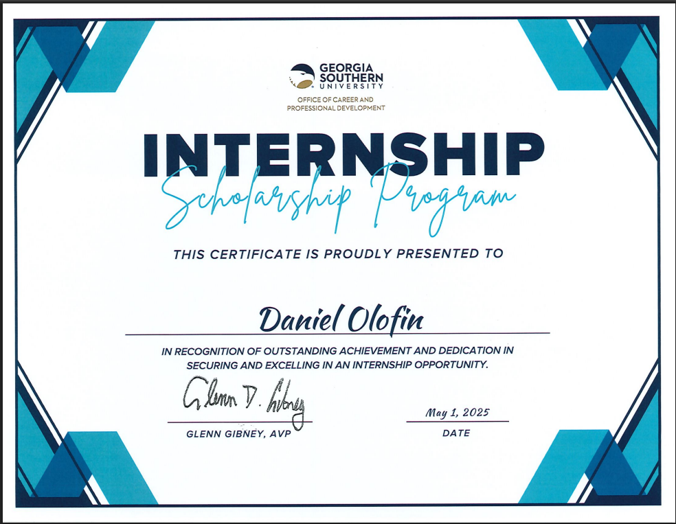
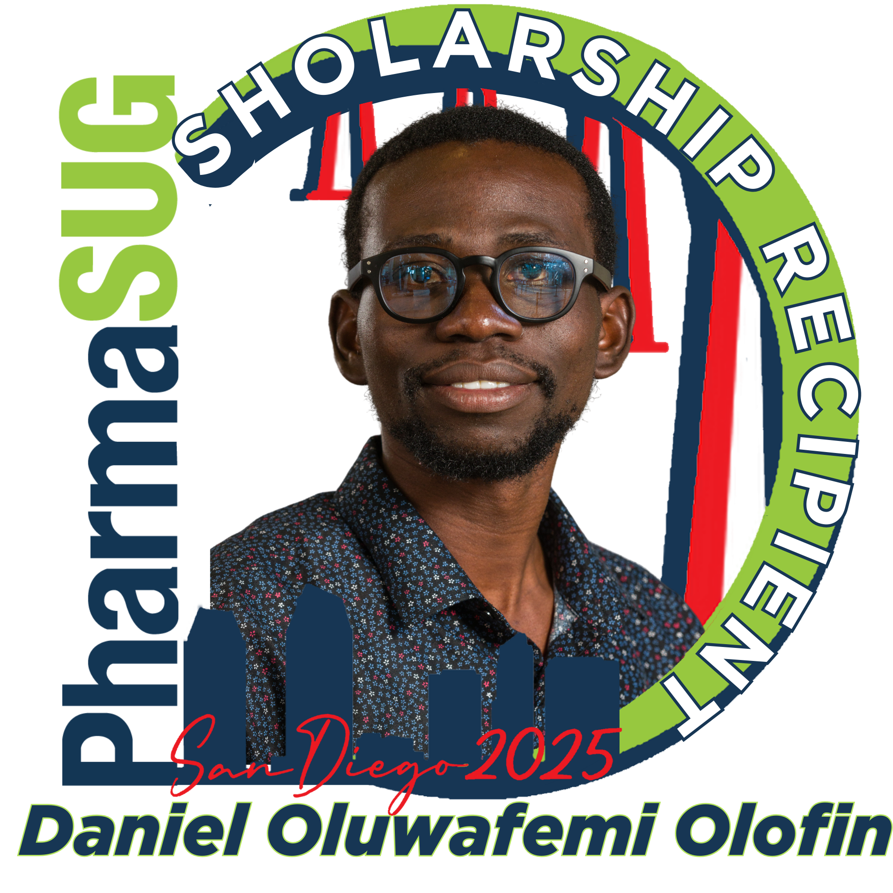
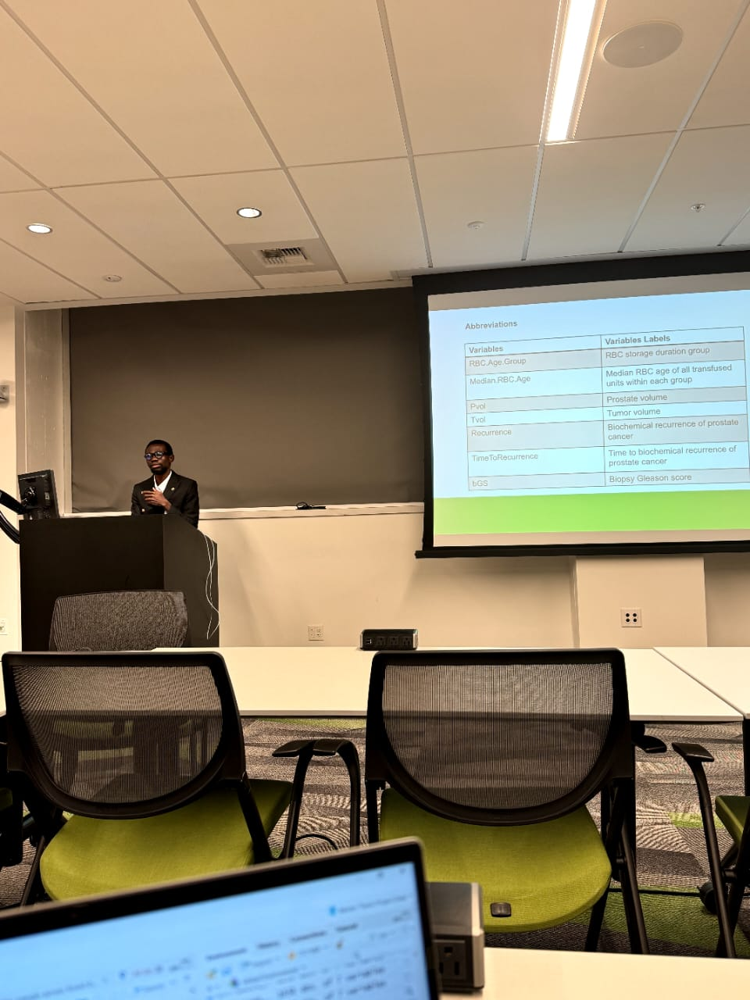
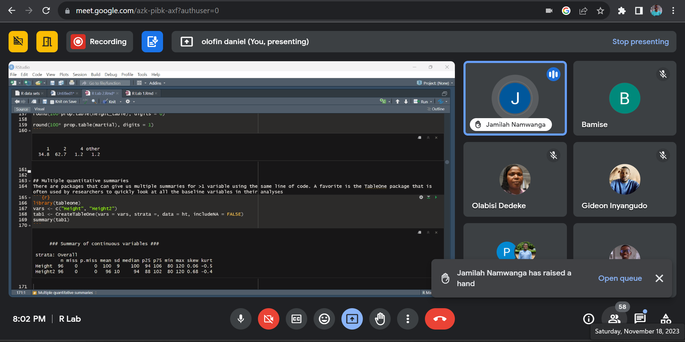

Updates and Events
Updates Timeline
📅 2026
Click to expand 2026 updates
April 23, 2026

Presented “Computational Maximum Likelihood Estimation of Nonlinear Time Series Regression Models with Correlated ARMA Errors” at GS4 2026. The work developed a computational framework for nonlinear time series regression with correlated error structures using Newton–Raphson maximum likelihood estimation to improve inference and predictive performance.
April 23, 2026
Nominated for the Averitt Award: Excellence in Research, in recognition of outstanding research contributions, methodological rigor, and impactful data-driven work. This includes quantitative analysis, reproducible research practices, interdisciplinary collaboration, conference presentations, and scholarly outputs.
April 03, 2026

Represented Georgia Southern University at the UGA ASA DataFest 2026, collaborating on a large-scale healthcare dataset. Contributed to developing data-cleaning pipelines, patient-level analyses, and an interactive tool for tracking patient journeys and identifying gaps in care.
April 03, 2026

Presented research on likelihood-based estimation for nonlinear epidemic compartmental models with correlated error structures (AR/ARMA) at the Central Botswana Mathematics and Statistical Sciences Conference IV. The work demonstrated improved inference and forecasting accuracy using maximum likelihood estimation and model comparison techniques.
March 13, 2026

Successfully defended my thesis titled “Computational Maximum Likelihood Estimation for Nonlinear Compartmental ODE Epidemic Models with Correlated Time Series Errors.” The work developed a computational framework integrating epidemic dynamics with time-series modeling to improve infectious disease inference and prediction.
📅 2025
Click to expand 2025 updates
August 10, 2025

I am pleased to share that I have completed my research internship at the Clonal Redesign Lab, Moffitt Cancer Center. This experience allowed me to apply stochastic simulation models and advanced biostatistical methods to study chromosomal instability in cancer cell lines. It has been an incredible opportunity to grow as a researcher and contribute to impactful oncology research.
July 24, 2025
I am honored to have been selected for the Emerging Leaders in AI (ELAI) Graduate Program, organized by Black in AI. This program will deepen my engagement with artificial intelligence and strengthen my work at the intersection of biostatistics, AI, and precision medicine.
July 22, 2025
I am excited to announce my induction as an Associate Member of Sigma Xi, The Scientific Research Honor Society, joining a global community of researchers advancing science.
June 2, 2025

Received a Scholarship Award and Certificate of Achievement from PharmaSUG Conference Committee for contributions to clinical research and data science.
June 1–4, 2025

Attended PharmaSUG 2025 Conference as a Student Scholarship Recipient, engaging with leaders in statistical programming and clinical data science.
May 21, 2025
Selected for the Yale PATHS Program, a 10-month competitive training program by Yale School of Medicine focused on developing future biomedical leaders.
May 11, 2025

Joined the Clonal Redesign Lab, Moffitt Cancer Center, as a Graduate Research Trainee working in mathematical oncology and data science.
May 1, 2025

Received Certification of Achievement from Georgia Southern University for securing and excelling in a competitive internship.
April 24, 2025

Presented research on Time Series Forecasting for HIV Prevalence using ARIMA models at GS4 Student Scholar Symposium.

Engaged with Professor Divine Wanduku during the GS4 Student Scholar Symposium.
April 1, 2025
Accepted for Summer 2025 internship at Moffitt Cancer Center focusing on cancer genomics and computational oncology.
February 24, 2025

Selected as Student Scholar for PharmaSUG 2025 in recognition of excellence in statistical programming.
📅 2024
Click to expand 2024 updates
October 25, 2024

Presented research at Fred Hutch Cancer Center Data Science Lab during the Data Science for Environmental Health Workshop.
📅 2023
Click to expand 2023 updates
(No entries yet — you can update as needed.)
📅 2022
Click to expand 2022 updates
November 18, 2022

Delivered hands-on training in medical statistics using R programming to clinicians, researchers, and students during Stat101 organized by StatsClinic.